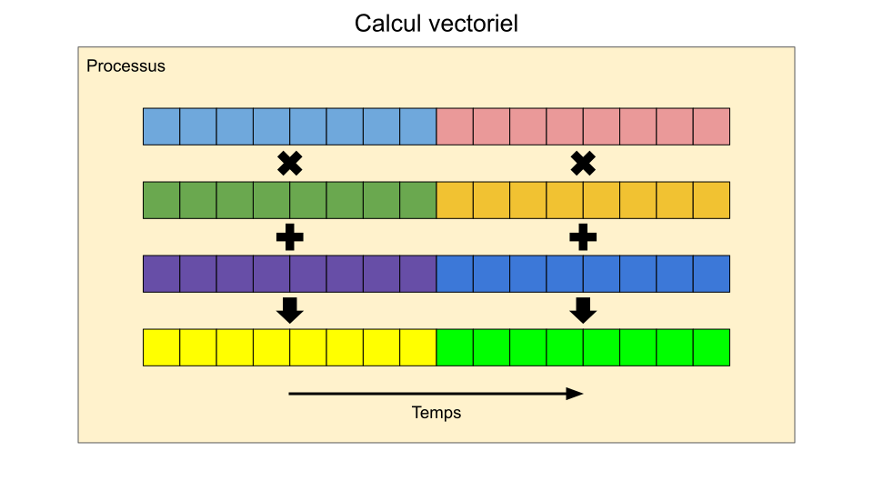

Introduction#
Rappel - le calcul haute performance#
Problématiques, solutions et préalables :
Lorsqu’on doit lancer une grande quantité de calculs ou de traitements de données, l’utilisation d’une grappe de calcul haute performance devient nécessaire.
Puisque les ressources sont partagées et en grande demande, chaque tâche doit être soumise à un ordonnanceur de tâches.
Il devient donc nécessaire d’estimer à l’avance les ressources qui seront réservées lors de l’exécution d’un calcul.
Différents types de tâches#
Deux grandes catégories de tâches qui travaillent sur un même problème :

Parmi les tâches séquentielles, il existe aussi le calcul vectoriel.
Description : une même opération sur des vecteurs de données
Ressources : un processeur moderne ou un accélérateur (GPU)

Parallélisme de données#
Beaucoup de données à traiter de manière indépendante
Plusieurs tâches séquentielles en simultané
Utilisation de lots de tâches
Ou une tâche parallèle qui partitionne les données en différents problèmes à traiter sur des processeurs différents

Des questions à se poser#
Quel type de calculs effectuez-vous?
Séquentiel ou parallel?
Peut-être vectoriel?
Traiter beaucoup de petits fichiers ou quelques grands fichiers?
Quelles ressources vont être consommées?
Quelles ressources choisir?
Quelle quantité de ressources?
Comment planifier le stockage nécessaire?
Avez-vous un plan de gestion des données actives?
Qui devrait accéder à quoi?
Quels espaces de stockage utiliser?
Quand devriez-vous archiver certaines données?
Comment lancer des tâches?
Comment en faire le suivi?